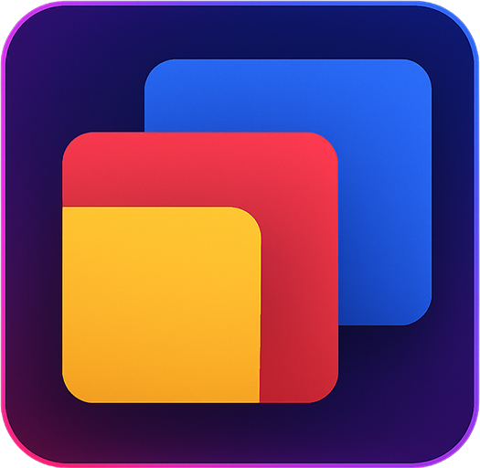

TidyTabs
☀️
üåô
Auto Mode
?
Organize Tabs Now
Ctrl+Shift+O
Toggle All Groups
Ctrl+Shift+U
Recategorize
Ungroup all tabs first
Settings
AI Provider
Groq (Free)
llama-3.1-8b-instant
OpenAI
gpt-5-mini
Anthropic
claude-sonnet-4-20250514
API Key
Test
Theme
Auto
Light
Dark
UI Style
Glass (Frosted)
Solid
Glass Preset
Default Frosted
Aurora Blue
Mint Glow
Dark Frost
When Theme = Auto: Default Frosted in Light and Dark Frost in Dark.
Default Algorithm
Category (AI)
Last Access
Frequency
Auto Mode
?
About TidyTabs
Version 0.1.0
AI-powered tab organization for Chrome
Icon created by Freepik - Flaticon